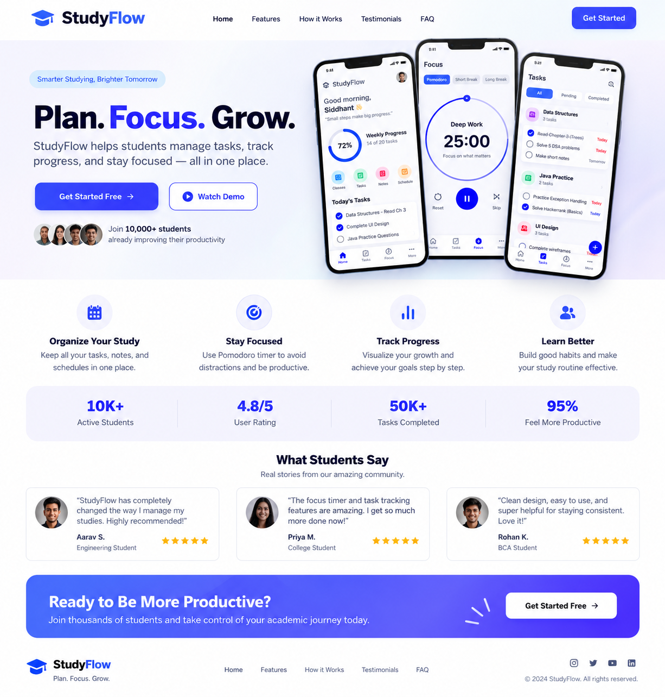

StudyFlow helps students manage tasks, track progress, and stay focused — all in one place.
Get Started Free →▶ Watch Demo10,000+ students already improving their productivity.

Keep tasks, notes, and schedules in one place.
Use Pomodoro sessions to reduce distractions.
Visualize growth and reach goals step by step.
Build habits that make your study routine effective.
Take control of your academic journey today.